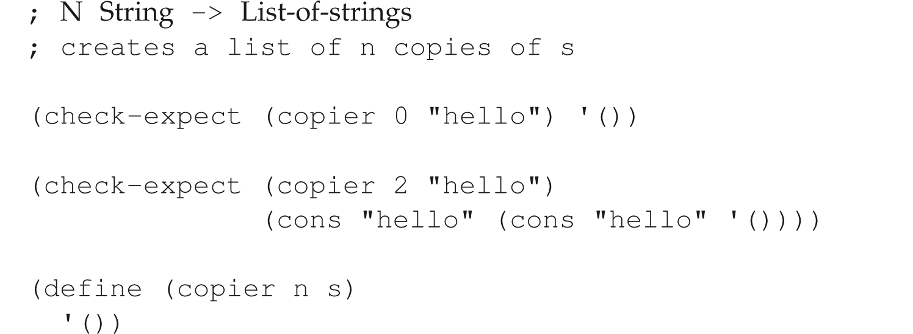
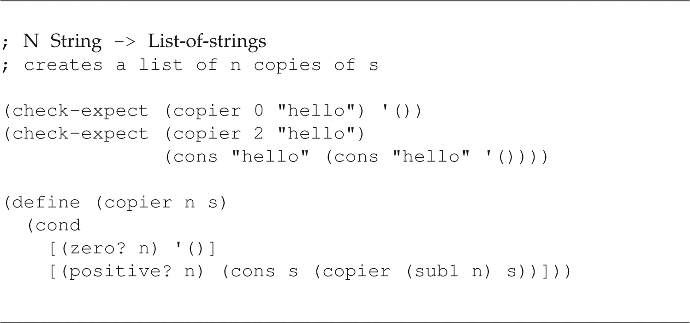
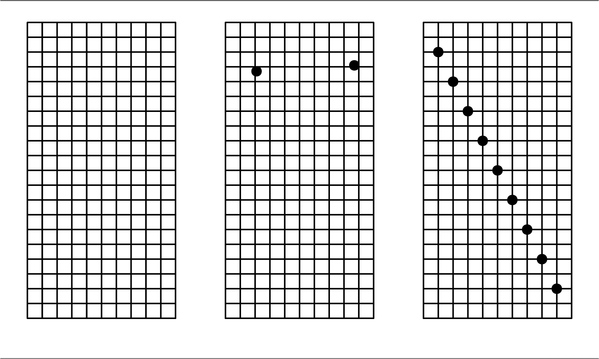

9.3 Natural Numbers
The BSL programming language supplies many functions that consume lists and a few that produce them, too. Among those is make-list, which consumes a number n together with some other value v and produces a list that contains v n times. Here are some examples:
> (make-list 2 "hello")
(cons "hello" (cons "hello" '()))
> (make-list 3 #true)
(cons #true (cons #true (cons #true '())))
> (make-list 0 17)
'()
In short, even though this function consumes atomic data, it produces arbitrarily large pieces of data. Your question should be how this is possible.
Our answer is that make-list’s input isn’t just a number, it is a special kind of number. In kindergarten you called these numbers “counting numbers”, that is, these numbers are used to count objects. In computer science, these numbers are dubbed natural numbers. Unlike regular numbers, natural numbers come with a data definition:
; An N is one of:
; -- 0
; -- (add1 N)
; interpretation represents the counting numbers
The first clause says that 0 is a natural number; it is used to say that there is no object to be counted. The second clause tells you that if n is a natural number, then n + 1 is one too, because add1 is a function that adds 1 to whatever number it is given. We could write this second clause as (+ n 1), but the use of add1 is supposed to signal that this addition is special.
What is special about this use of add1 is that it acts more like a constructor from some structure-type definition than a regular function. For that reason, BSL also comes with the function sub1, which is the “selector” corresponding to add1. Given any natural number m not equal to 0, you can use sub1 to find out the number that went into the construction of m. Put differently, add1 is like cons and sub1 is like first and rest.
At this point you may wonder what the predicates are that distinguish 0 from those natural numbers that are not 0. There are two, just as for lists: zero?, which determines whether some given number is 0, and positive?, which determines whether some number is larger than 0.
Now you are in a position to design functions on natural numbers, such as make-list, yourself. The data definition is already available, so let’s add the header material:

Developing the template is the next step. The questions for the template suggest that copier’s body is a cond expression with two clauses: one for 0 and one for positive numbers. Furthermore, 0 is considered atomic and positive numbers are considered structured values, meaning the template needs a selector expression in the second clause. Last but not least, the data definition for N is self-referential in the second clause. Hence the template needs a recursive application to the corresponding selector expression in the second clause:
(define (copier n s)
(cond
[(zero? n) …]
[(positive? n) (… (copier (sub1 n) s) …)]))
Figure 59 contains a complete definition of the copier function, as obtained from its template. Let’s reconstruct this step carefully. As always, we start with the cond clause that has no recursive calls. Here the condition tells us that the (important) input is 0, and that means the function must produce a list with 0 items, that is, none. Of course, working through the second example has already clarified this case. Next we turn to the other cond clause and remind ourselves what its expressions compute:
1. (sub1 n) extracts the natural number that went into the construction of n, which we know is larger than 0;
2. (copier (sub1 n) s) produces a list of (sub1 n) strings s according to the purpose statement of copier.

Figure 59: Creating a list of copies
But the function is given n and must therefore produce a list with n strings s. Given a list with one too few strings, it is easy to see that the function must simply cons one s onto the result of (copier (sub1 n) s). And that is precisely what the second clause specifies.
At this point, you should run the tests to ensure that this function works at least for the two worked examples. In addition, you may wish to use the function on some additional inputs.
Exercise 149. Does copier function properly when you apply it to a natural number and a Boolean or an image? Or do you have to design another function? Read part III for an answer.
An alternative definition of copier might use else:
(define (copier.v2 n s)
(cond
[(zero? n) '()]
[else (cons s (copier.v2 (sub1 n) s))]))
How do copier and copier.v2 behave when you apply them to 0.1 and "x"? Explain. Use DrRacket’s stepper to confirm your explanation. 
Exercise 150. Design the function add-to-pi. It consumes a natural number n and adds it to pi without using the primitive + operation. Here is a start:
; N -> Number
; computes (+ n pi) without using +
(check-within (add-to-pi 3) (+ 3 pi) 0.001)
(define (add-to-pi n)
pi)
Once you have a complete definition, generalize the function to add, which adds a natural number n to some arbitrary number x without using +. Why does the skeleton use check-within?
Exercise 151. Design the function multiply. It consumes a natural number n and multiplies it with a number x without using *.
Use DrRacket’s stepper to evaluate (multiply 3 x) for any x you like. How does multiply relate to what you know from grade school?
Exercise 152. Design two functions: col and row.
The function col consumes a natural number n and an image img. It produces a column—a vertical arrangement—of n copies of img.
The function row consumes a natural number n and an image img. It produces a row—a horizontal arrangement—of n copies of img.
Exercise 153. The goal of this exercise is to visualize the result of a 1968-style European student riot. Here is the rough idea. A small group of students meets to make paint-filled balloons, enters some lecture hall, and randomly throws the balloons at the attendees. Your program displays how the balloons color the seats in the lecture hall.
Use the two functions from exercise 152 to create a rectangle of 8 by 18 squares, each of which has size 10 by 10. Place it in an empty-scene of the same size. This image is your lecture hall.
Design add-balloons. The function consumes a list of Posn whose coordinates fit into the dimensions of the lecture hall. It produces an image of the lecture hall with red dots added as specified by the Posns.
Figure 60 shows the output of our solution when given some list of Posns. The left-most is the clean lecture hall, the second one is after two balloons have hit, and the last one is a highly unlikely distribution of 10 hits. Where is the 10th?

Figure 60: Random attacks